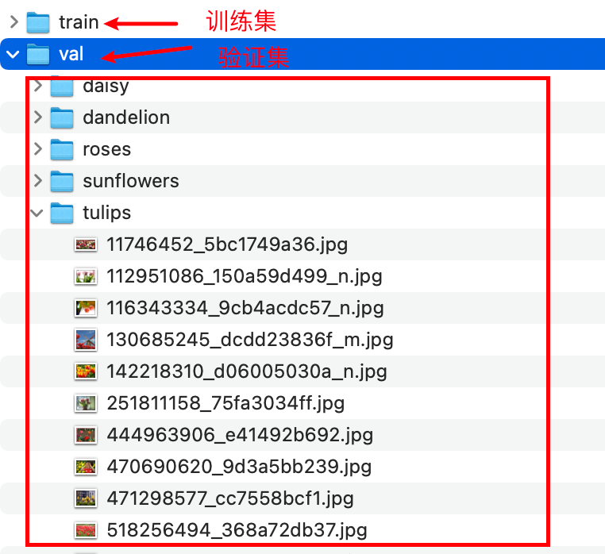
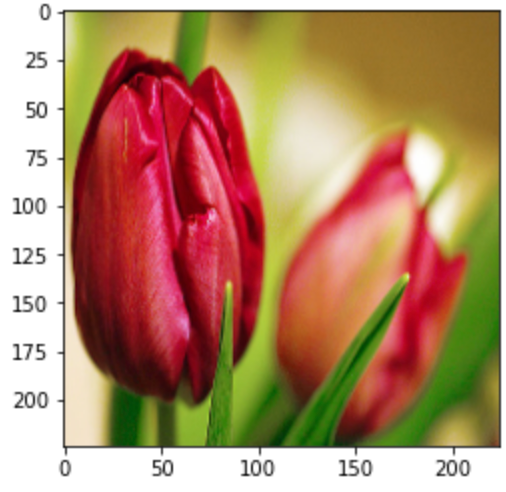

1.1 图像分类简介¶
学习目标
- 知道图像分类的目的
- 知道imageNet数据集
1 图像分类¶
图像分类实质上就是从给定的类别集合中为图像分配对应标签的任务。也就是说我们的任务是分析一个输入图像并返回一个该图像类别的标签。
假定类别集为categories = {dog, cat, panda}，之后我们提供一张图片给分类模型，如下图所示：

分类模型给图像分配多个标签，每个标签的概率值不同，如dog:1%，cat:4%，panda:95%，根据概率值的大小将该图片分类为panda，那就完成了图像分类的任务。
2 常用数据集¶
2.1 CIFAR-10和CIFAR-100¶
- CIFAR-10数据集5万张训练图像、1万张测试图像、10个类别、每个类别有6k个图像，图像大小32×32×3。下图列举了10个类，每一类随机展示了10张图片：

- CIFAR-100数据集也是有5万张训练图像、1万张测试图像、包含100个类别、图像大小32×32×3。
在torchvision中加载数据集时：
import torchvision
"""
使用CIFAR10这个数据集,
root="./dataset": 会在当前目录下创建dataset文件夹，同时把数据保存进去
train=True: 这是一个训练集，为False, 则表明这是一个测试集
download=True: 数据集会从网上下载
"""
train_set = torchvision.datasets.CIFAR10(root="./dataset",
train=True,
download=True)
test_set = torchvision.datasets.CIFAR10(root="./dataset",
train=False,
download=True)
2.2 ImageNet¶
ImageNet数据集是ILSVRC竞赛使用的是数据集，由斯坦福大学李飞飞教授主导，包含了超过1400万张全尺寸的有标记图片，大约有22000个类别的数据。ILSVRC全称ImageNet Large-Scale Visual Recognition Challenge，是视觉领域最受追捧也是最具权威的学术竞赛之一，代表了图像领域的最高水平。从2010年开始举办到2017年最后一届，使用ImageNet数据集的一个子集，总共有1000类。
该比赛的获胜者从2012年开始都是使用的深度学习的方法：
- 2012年冠军是AlexNet,由于准确率远超传统方法的第二名（top5错误率为15.3%，第二名为26.2%），引起了很大的轰动。自此之后，CNN成为在图像识别分类的核心算法模型，带来了深度学习的大爆发。
- 2013年冠军是ZFNet，结构和AlexNet区别不大，分类效果也差不多。
- 2014年亚军是VGG网络，网络结构十分简单，因此至今VGG-16仍在广泛使用。
- 2014年的冠军网络是GoogLeNet ，核心模块是Inception Module。Inception历经了V1、V2、V3、V4等多个版本的发展，不断趋于完善。GoogLeNet取名中L大写是为了向LeNet致敬，而Inception的名字来源于盗梦空间中的"we need to go deeper"梗。
- 2015年冠军网络是ResNet。核心是带短连接的残差模块，其中主路径有两层卷积核（Res34），短连接把模块的输入信息直接和经过两次卷积之后的信息融合，相当于加了一个恒等变换。短连接是深度学习又一重要思想，除计算机视觉外，短连接思想也被用到了机器翻译、语音识别/合成领域
- 2017年冠军SENet是一个模块，可以和其他的网络架构结合，比如GoogLeNet、ResNet等。
上述图像分类模型都比较经典，特别是VGG16、GoogLeNet和ResNet，现在仍然在广泛使用，在接下来的课程中我们对这些网络进行逐一介绍。
ImageNet数据集过于庞大，在接下来的课程中将使用小一点的数据集-鲜花分类数据集进行经典的模型的学习。
2.3 鲜花分类数据集¶
鲜花分类数据集是包含 5 种类型的图像数据集，主要用于图像分类，其共有3670 张图像，其中训练图像和测试图像分别为 3306 张和 364张，主要分为五类鲜花，分别为菊花，蒲公英，玫瑰，向日葵和郁金香，每个子目录中表示一种类别的数据。数据集存放在dataset/flower文件夹中，如下所示：

我们使用以下API将这些数据解析出来：
ImageFolder(root, transform=None)
参数的意义如下所示：
root：在root指定的路径下寻找图片
transform：对图像数据进行处理，比如类型转换，尺寸的调整等
具体实现如下所示：
from torchvision.datasets import ImageFolder
# 指定数据集路径
flowers_train_path = './dataset/flower_datas/train/'
flowers_test_path = './dataset/flower_datas/val/'
# 先将数据转换为tensor类型，并调整数据的大小为224x224
dataset_transform = torchvision.transforms.Compose([
torchvision.transforms.ToTensor(),
torchvision.transforms.Resize((224,224))
])
# 获取训练集数据和测试集数据
flowers_train = ImageFolder(flowers_train_path, transform=dataset_transform)
flowers_test = ImageFolder(flowers_test_path,transform=dataset_transform)
我们可以获取训练集和测试集样本数量并进行展示：
len(flowers_train.imgs) # 3306
len(flowers_test.imgs) # 364
# 图像展示：随机指定某一幅图片进行可视化
import matplotlib.pyplot as plt
plt.imshow(flowers_train.__getitem__(3000)[0].permute(1,2,0))
展示结果如下所示：

在接下来的课程中我们将使用鲜花分类数据集学习经典的卷积神经网络的使用。
总结
1.图像分类是什么？
从给定的类别集合中为图像分配对应的类别标签
2.常用的数据集
cifar数据集,ImageNet数据集